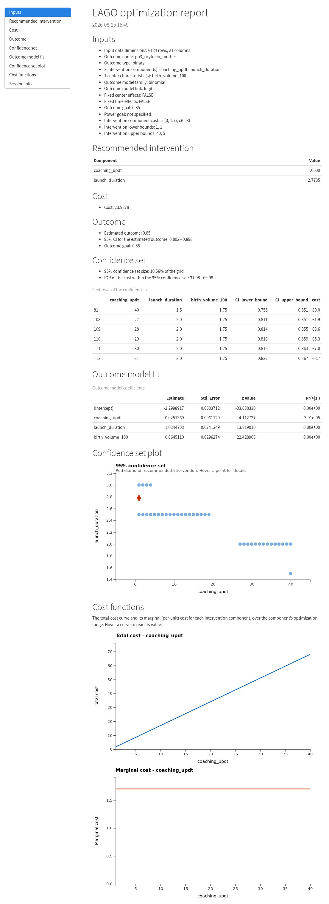
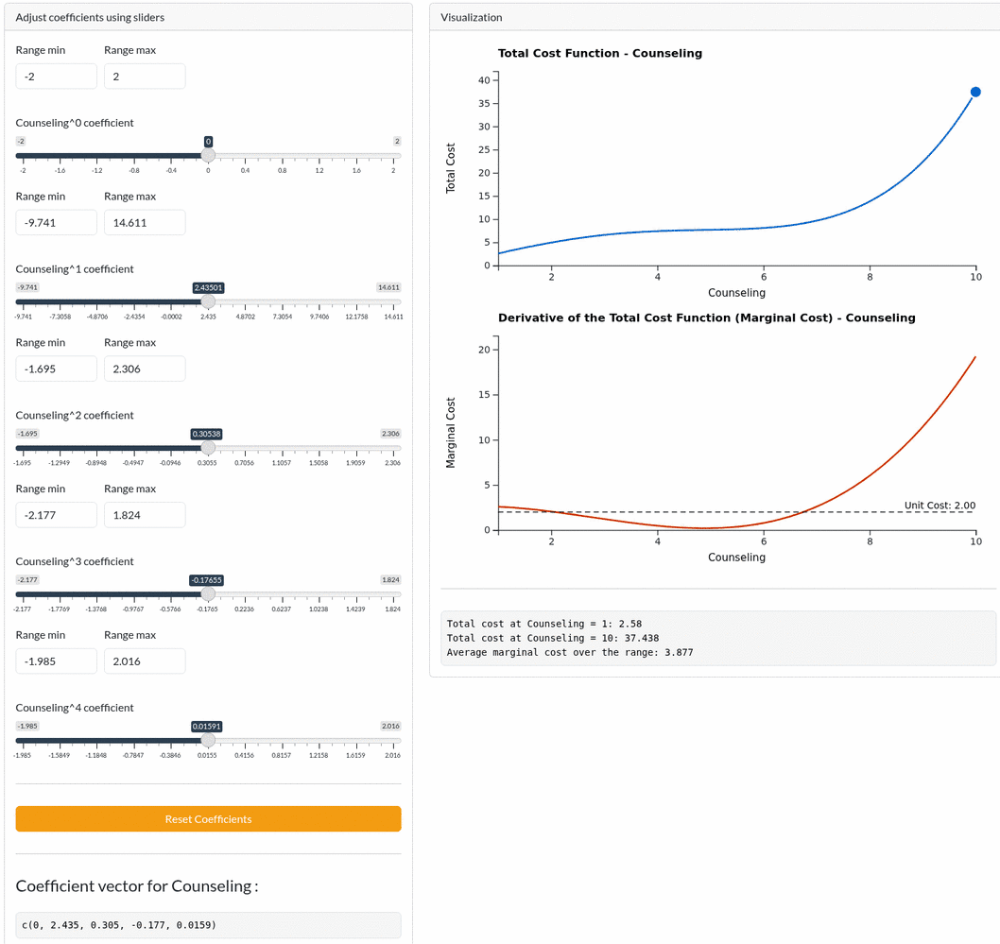
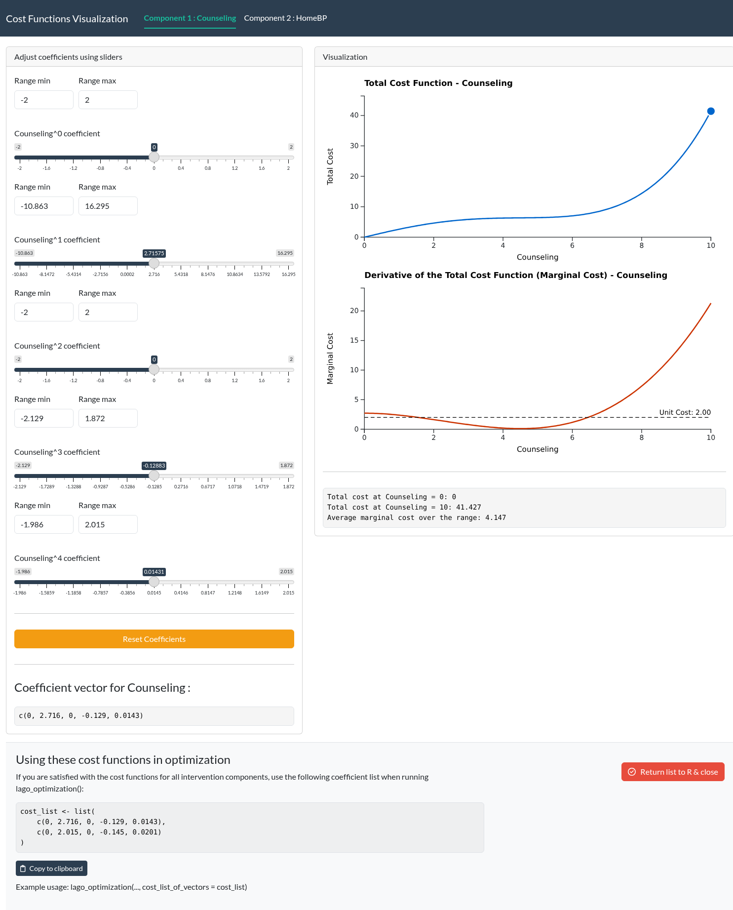

The LAGO R package bridges the gap between theoretical advances in Learn-As-you-GO (LAGO) and practical applications by providing a standardized solution for: 1) fitting the outcome models for both binary and continuous outcomes, including support for fixed center effects/center characteristics and fixed time effects, 2) calculating the recommended interventions based on various optimization criteria, including support for custom cost functions, 3) estimating the optimal intervention based on data from all stages, 4) calculating the 95% confidence sets for the recommended interventions and the optimal interventions.
How to install the R package
-
Method 1 (directly using RStudio):
install.packages("devtools") devtools::install_github("https://github.com/correspondMerchant/LAGO-R-Package") Method 2: Clone this repo into RStudio, you can follow the directions provided in this video.
The main functions
The LAGO R package has four user-facing functions lago_optimization(), lago_sensitivity(), visualize_cost(), and lago_report().
lago_optimization() carries out the LAGO optimizations, lago_sensitivity() checks how robust the recommendation is to your assumptions, visualize_cost() helps you choose cost functions for the intervention components, and lago_report() renders a self-contained HTML report of an optimization result.
lago_optimization() returns an object of class "lago" with print(), summary(), and plot() methods: print() (and the identical summary()) shows the full result on the console, including an inputs recap, the fitted outcome-model coefficient table, the overall intervention-effect test, the recommended intervention with its cost and estimated-outcome confidence interval, and the confidence set; plot() visualizes the confidence set. lago_report(result) writes those same sections, plus the confidence-set plot and a session-info footer, to a shareable HTML file.
lago_optimization() supports three goal modes: an outcome goal alone, a power goal alone, or both together. At least one of outcome_goal or power_goal must be provided. When both are provided, the effective outcome goal used for the optimization is the higher of the outcome goal and the outcome level implied by the power goal (the “whichever is higher” rule). A power goal is only supported for binary outcomes and requires a group column plus num_centers_in_next_stage and patients_per_center_in_next_stage; it cannot be combined with outcome_goal_intention = "minimize". When participants are clustered within centers, pass the intra-cluster correlation to icc (a single value, or c(control, treatment)) and identify the clustering column with power_goal_cluster_id. The power calculation then inflates the variance of the test statistic by the design effect, so meeting the same power goal requires a stronger intervention. Without icc, the power calculation treats participants as independent.
These functions take many arguments. To understand the input arguments, read the help files by running the following code in R (this step is HIGHLY recommended, please do this before moving on to the examples):
help(lago_optimization)
help(visualize_cost)
help(lago_report)Basic use case
We consider a hypothetical example based on the built-in R dataset ‘mtcars’. The scenario is contrived; its purpose is to demonstrate the mechanics of running a LAGO optimization on a real dataset.
The ‘mtcars’ data was extracted from the 1974 Motor Trend US magazine, and comprises fuel consumption and 10 aspects of automobile design and performance for 32 automobiles (1973–74 models). Here, we only focus on the following variables: ‘mpg’ - miles per gallon, ‘gear’ - number of forward gears, and ‘qsec’ - quarter mile time in seconds.
Suppose that ‘mpg’ is our outcome of interest, and ‘gear’ and ‘qsec’ are the two intervention components. We are interested in estimating the recommended intervention package (values of ‘gear’ and ‘qsec’) that is expected to achieve an outcome goal of 40 miles per gallon. We expect that the estimated outcome without any intervention is going to be less than 40, and implementing the two intervention components can increase the value of the outcome (which corresponds to setting outcome_goal_intention = "maximize"). We are also interested in obtaining the 95% confidence set, which is a list of intervention package compositions that can be expected to include the optimal intervention in 95% of such trials. For the confidence set, we are only interested in the integer values of the intervention components, which corresponds to setting confidence_set_grid_step_size = c(1, 1).
Since ‘mpg’ is a continuous variable, we can fit a linear regression of the outcome ‘mpg’ on the predictors ‘gear’ and ‘qsec’. Then, suppose that we know the lower and upper bounds of ‘gear’ and ‘qsec’ are: 0 <= ‘gear’ <= 10 and 0 <= ‘qsec’ <= 350, and the total monetary cost of implementing the ‘gear’ () and ‘qsec’ () are , and , respectively.
For running LAGO optimizations:
results <- lago_optimization(
data = mtcars,
outcome_name = "mpg",
outcome_type = "continuous",
glm_family = "gaussian",
link = "identity",
intervention_components = c("gear", "qsec"),
intervention_lower_bounds = c(0, 0),
intervention_upper_bounds = c(10, 350),
cost_list_of_vectors = list(c(0, 4), c(4, 6)),
outcome_goal = 40,
outcome_goal_intention = "maximize",
confidence_set_grid_step_size = c(1, 1)
)Typical output:
ℹ Starting LAGO Optimization
ℹ Validating inputs...
[1] "When 'cost_list_of_vectors' is provided, 'default_cost_fxn_type' is ignored."
✔ Done
ℹ Assessing the cost function...
✔ Done
ℹ Fitting the outcome model...
✔ Done
ℹ Calculating the recommended intervention...
✔ Done
ℹ Calculating the confidence set...
If the confidence set calculation takes a long time to run, please consider changing the confidence set step size.
✔ Done
→ ♥ LAGO optimization complete ♥
ℹ Printing the output...
── LAGO optimization result ────────────────────────────────────────────────────
── Inputs
Input data dimensions: 32 rows, 11 columns
Outcome name: mpg
Outcome type: continuous
2 intervention component(s): gear, qsec
Outcome model family: gaussian
Outcome model link: identity
Fixed center effects: FALSE
Fixed time effects: FALSE
Outcome goal: 40
Power goal: not specified
Intervention component costs: c(0, 4), c(4, 6)
Intervention lower bounds: 0, 0
Intervention upper bounds: 10, 350
── Outcome model fit
Call:
glm(formula = formula, family = family_object, data = data, weights = weights)
Coefficients:
Estimate Std. Error t value Pr(>|t|)
(Intercept) -30.7108 9.6702 -3.176 0.003530 **
gear 4.8711 1.0814 4.505 0.000100 ***
qsec 1.8399 0.4465 4.121 0.000288 ***
---
Signif. codes: 0 ‘***’ 0.001 ‘**’ 0.01 ‘*’ 0.05 ‘.’ 0.1 ‘ ’ 1
(Dispersion parameter for gaussian family taken to be 18.84028)
Null deviance: 1126.05 on 31 degrees of freedom
Residual deviance: 546.37 on 29 degrees of freedom
AIC: 189.61
Number of Fisher Scoring iterations: 2
── Overall intervention-effect test
To see the overall test results, include a 'group' column in the data with
values 'treatment' or 'control' (binary outcomes only).
── Recommended intervention
gear: 10
qsec: 11.9574
Cost: 115.7446
Estimated outcome: 40
95% CI for the estimated outcome: 26.64 - 53.36
Outcome goal: 40
── Confidence set
95% confidence set size: 4.25% of the grid
IQR of the cost within the 95% confidence set: 155.5 - 242.5
First rows of the confidence set (use $cs for all):
gear qsec CI_lower_bound CI_upper_bound cost
45 10 3 6.902 40.137 62
56 10 4 9.261 41.458 68
67 10 5 11.589 42.810 74
78 10 6 13.881 44.197 80
89 10 7 16.136 45.622 86
99 9 8 15.118 40.577 88The recommended intervention is ‘gear’ = 10 and ‘qsec’ = 11.96. The console output shows the full picture: the inputs recap, the fitted outcome-model coefficient table, the overall intervention-effect test, the recommended intervention with its cost and estimated-outcome confidence interval, and the confidence set. results is an object of class "lago"; summary(results) prints the same output, plot(results) visualizes the confidence set, and you can access any field directly (for example results$cs for the full confidence set, results$model for the fitted model, or results$rec_int for the recommended intervention). To save a shareable HTML report of the result, run:
lago_report(results)This writes a self-contained HTML report with the recommended intervention, the confidence set, and the confidence-set plot:

To adjust the cost functions and , visualize_cost() lets you visualize and select cost functions:
visualize_cost() creates a Shiny app that allows the user to adjust the coefficients of the cost functions for each intervention component and visualize the resulting total cost function and unit cost function. The initial coefficients are calculated based on the unit costs, the default cost function type (linear or cubic), and the lower and upper bounds.
The user can adjust the coefficients using sliders and reset them to their initial values. The app also displays the current coefficient vector for each component. The user can copy the final coefficient list (at the bottom of the app) for use in lago_optimization().
visualize_cost(
component_names = c("Component 1", "Component 2"),
unit_costs = c(0.5, 1),
default_cost_fxn_type = "linear",
intervention_lower_bounds = c(0, 0),
intervention_upper_bounds = c(10, 10)
)The cost curves are drawn client-side with D3, so they redraw instantly as you move the sliders (no server round-trip). Hovering a curve shows a read-out at that intervention level, the marginal-cost chart draws a dashed unit-cost reference line, and the right endpoint of the total-cost curve is draggable to rescale all of a component’s coefficients at once. When a setting makes the total cost decrease or go negative, the chart is tinted red to flag the invalid state.
The GIF below cycles through several coefficient settings to show these interactions: the curves redrawing live, an endpoint drag, and the red invalid-state tint.
(please wait a few seconds for the GIF to load)

A static view of a valid state:

More advanced use case
We consider a more complicated example, which is adapted from Nevo et al., 2021.
Suppose we want to run LAGO optimization for the BetterBirth Study, a costly failed trial of maternal and newborn care that took place in Uttar Pradesh, India (Hirschhorn et al. 2015; Semrau et al. 2017). The BetterBirth Study assessed the use of the World Health Organization’s (WHO) Safe Childbirth Checklist, a 31-item checklist of best labor and delivery practices believed to be feasible in resource-limited settings, to reduce maternal and neonatal mortality. The intervention was adapted and tested in a three-phase process. In this setting, neonatal mortality is 32 per 1,000 live births and maternal mortality is 258 per 100,000 births (Semrau et al. 2017).
Suppose that we want to identify the optimal intervention package such that the cost of the intervention is minimized and the probability of a desired binary outcome, oxytocin administered (‘pp3_oxytocin_mother’), is above a given threshold (85%). The two intervention components are ‘coaching_updt’ (), the number of coaching updates, and ‘launch_duration’ (), the launch duration in days. Suppose that we know the lower and upper bounds of ‘coaching_updt’ and ‘launch_duration’ are [1,40] and [1,5], respectively. The total costs of the two components are , and , respectively. In addition, we assign fake centers and fake time periods to all observations to demonstrate fitting outcome models with fixed center and fixed time effects.
Instead of an overall optimal intervention package, we target the optimal intervention package for center “5” in time period “10”.
# The BetterBirth data has been open sourced so a version of
# the BetterBirth data is included in the LAGO R package
bb_data <- LAGOtrials::BB_data
head(bb_data)
set.seed(123)
## add fake center effects
bb_data$center <- sample(1:10, nrow(bb_data), replace = TRUE)
## add fake time effects
bb_data$period <- sample(1:10, nrow(bb_data), replace = TRUE)
optimization_results <- lago_optimization(
data = bb_data,
outcome_name = "pp3_oxytocin_mother",
outcome_type = "binary",
intervention_components = c("coaching_updt", "launch_duration"),
intervention_lower_bounds = c(1, 1),
intervention_upper_bounds = c(40, 5),
include_center_effects = TRUE,
include_time_effects = TRUE,
center_effects_optimization_values = "5",
time_effect_optimization_value = 10,
cost_list_of_vectors = list(c(0, 1.7), c(0, 8)),
outcome_goal = 0.85,
outcome_goal_intention = "maximize"
)Output:
ℹ Starting LAGO Optimization
ℹ Validating inputs...
'center' column is not a factor type. To ensure the correct model fit, it has been converted to the factor type.
'period' column is not a factor type. To ensure the correct model fit, it has been converted to the factor type.
[1] "When 'cost_list_of_vectors' is provided, 'default_cost_fxn_type' is ignored."
✔ Done
ℹ Assessing the cost function...
✔ Done
ℹ Fitting the outcome model...
✔ Done
ℹ Calculating the recommended intervention...
✔ Done
ℹ Calculating the confidence set...
If the confidence set calculation takes a long time to run, please consider changing the confidence set step size.
✔ Done
→ ♥ LAGO optimization complete ♥
ℹ Printing the output...
── LAGO optimization result ────────────────────────────────────────────────────
── Inputs
Input data dimensions: 6124 rows, 23 columns
Outcome name: pp3_oxytocin_mother
Outcome type: binary
2 intervention component(s): coaching_updt, launch_duration
Outcome model family: binomial
Outcome model link: logit
Fixed center effects: TRUE
Fixed time effects: TRUE
Outcome goal: 0.85
Power goal: not specified
Intervention component costs: c(0, 1.7), c(0, 8)
Intervention lower bounds: 1, 1
Intervention upper bounds: 40, 5
── Outcome model fit
Call:
glm(formula = formula, family = family_object, data = data, weights = weights)
Coefficients:
Estimate Std. Error z value Pr(>|z|)
(Intercept) -7.947e-01 1.345e-01 -5.908 3.47e-09 ***
center2 1.419e-01 1.361e-01 1.043 0.297
center3 8.206e-02 1.370e-01 0.599 0.549
center4 -8.730e-02 1.384e-01 -0.631 0.528
center5 1.790e-02 1.374e-01 0.130 0.896
center6 -1.491e-01 1.413e-01 -1.056 0.291
center7 -1.222e-01 1.362e-01 -0.897 0.370
center8 -2.050e-01 1.381e-01 -1.485 0.138
center9 -2.467e-02 1.380e-01 -0.179 0.858
center10 1.240e-01 1.375e-01 0.902 0.367
period2 -1.455e-01 1.386e-01 -1.050 0.294
period3 5.545e-02 1.348e-01 0.411 0.681
period4 -1.545e-01 1.425e-01 -1.084 0.278
period5 -3.372e-02 1.392e-01 -0.242 0.809
period6 3.380e-02 1.377e-01 0.246 0.806
period7 -1.417e-01 1.415e-01 -1.002 0.316
period8 1.252e-02 1.363e-01 0.092 0.927
period9 -1.844e-01 1.364e-01 -1.353 0.176
period10 1.041e-01 1.362e-01 0.764 0.445
coaching_updt -2.997e-05 7.668e-03 -0.004 0.997
launch_duration 1.375e+00 8.744e-02 15.726 < 2e-16 ***
---
Signif. codes: 0 ‘***’ 0.001 ‘**’ 0.01 ‘*’ 0.05 ‘.’ 0.1 ‘ ’ 1
(Dispersion parameter for binomial family taken to be 1)
Null deviance: 8470.8 on 6123 degrees of freedom
Residual deviance: 6344.6 on 6103 degrees of freedom
AIC: 6386.6
Number of Fisher Scoring iterations: 4
── Overall intervention-effect test
To see the overall test results, include a 'group' column in the data with
values 'treatment' or 'control' (binary outcomes only).
── Recommended intervention
coaching_updt: 1.0014
launch_duration: 1.7508
Cost: 15.7083
Estimated outcome: 0.85
95% CI for the estimated outcome: 0.802 - 0.898
Outcome goal: 0.85
── Confidence set
95% confidence set size: 11.85% of the grid
IQR of the cost within the 95% confidence set: 32.4 - 67.75
First rows of the confidence set (use $cs for all):
coaching_updt launch_duration CI_lower_bound CI_upper_bound cost
78 33 1.45 0.726 0.853 67.7
79 35 1.45 0.722 0.856 71.1
80 37 1.45 0.718 0.860 74.5
81 39 1.45 0.714 0.864 77.9
82 1 1.60 0.769 0.874 14.5
83 3 1.60 0.772 0.872 17.9The outcome model here includes many more coefficients, one per center and per time period, than the previous example, and the console output shows them all. summary(optimization_results) prints the same output; inspect optimization_results$cs for the full confidence set or optimization_results$model for the fitted model, or run lago_report(optimization_results) for a shareable HTML report of the result.
Sensitivity analysis
A recommended intervention depends on inputs you may be unsure about, chiefly the outcome goal and the assumed costs. lago_sensitivity() re-runs the optimization across a sweep of one input and reports how the recommendation, its cost, and the estimated outcome move, so you can see how robust the recommendation is.
The simplest way is to fit once and then hand the result to lago_sensitivity(), which reuses that call, so you only add parameter (what to vary) and values (the sweep). For example, how does the recommended cost change as the outcome goal tightens?
result <- lago_optimization(
data = mtcars,
outcome_name = "mpg",
outcome_type = "continuous",
glm_family = "gaussian",
link = "identity",
intervention_components = c("gear", "qsec"),
intervention_lower_bounds = c(0, 0),
intervention_upper_bounds = c(10, 350),
cost_list_of_vectors = list(c(0, 4), c(4, 6)),
outcome_goal = 40,
optimization_method = "grid_search",
optimization_grid_search_step_size = c(1, 1)
)
sens <- lago_sensitivity(
result,
parameter = "outcome_goal",
values = c(25, 30, 35, 40)
)
sens # a tidy data.frame: value, the recommended value of each component, rec_int_cost, est_outcome_goal
plot(sens) # the recommended cost as a function of the swept valueYou can also call lago_sensitivity() without a fitted result by passing the lago_optimization() arguments directly (the same arguments, plus parameter and values); passing the result just saves retyping them.
Use parameter = "cost_multiplier" to scale every cost at once (for example values = c(0.8, 1, 1.2) for plus or minus 20%). Runs that fail are recorded as NA with a status note rather than stopping the sweep, and the confidence set is skipped for speed.
How to run additional examples
This README does not document every input argument, every component of the outcome model, or the optimization algorithm behind the recommended interventions.
You can also fit ‘center-level’ data, change the optimization method, add interaction terms and covariates, and test for an overall intervention effect. Please refer to the R help files and the examples in the manual tests folder for details.
You can start with the simpler ones, like the identity link with built-in dataset, or the logistic link with the BetterBirth dataset before moving on to other files.
If you want to learn how to include a power goal, please start with the file test_binary_power_goal, where the BetterBirth data is used. You must add a group column to the data before calling lago_optimization(). The unconditional power approach is the default; set power_goal_approach = "conditional" to use the conditional approach instead. To account for within-center clustering in the power calculation, see test_icc_power, which shows how the icc argument shifts the recommended intervention.
The complete set of runnable .Rmd examples, grouped by topic:
Recommended interventions: - test_rec_int_for_cts_identity — continuous outcome with an identity link, on the built-in mtcars dataset. - test_rec_int_for_BB_data — binary outcome with a logistic link, on the BetterBirth dataset. - test_rec_int_for_BB_data_cts — BetterBirth proportions modeled as a continuous outcome.
Goal modes and power: - test_goal_modes — three goal modes: an outcome goal alone, a power goal alone, and both together. - test_binary_power_goal — power goal for a binary outcome, under the unconditional and conditional approaches. - test_icc_power — within-center clustering in the power calculation, via icc.
Cost functions: - test_default_cost_function — default cost function derived from unit costs and bounds. - test_higher_order_costs — higher-order (for example, cubic) cost functions. - test_visualize_cost — visualize_cost() Shiny app for choosing cost-function coefficients.
Confidence set and the optimization algorithm: - test_confidence_set — 95% confidence set, and how to read its size and cost range. - test_shrinking_method — shrinking method, used when the outcome goal is not reachable. - test_shrinking_with_power_goal — shrinking method under a power goal.
Outcome model and testing: - test_fit_diagnostics — fit diagnostics that warn about a questionable outcome model (glm warnings, near-singular estimates, non-significant components) while the optimization continues. - test_overall_intervention — overall intervention-effect test, reported when a group column is supplied.
Using LAGO from Python
A Python wrapper lives in python/ (importable as lago) for people who work in Python. It calls the real R functions through rpy2, so the results are exactly the ones the R package produces. Because it embeds R, you need R and the installed LAGO R package as well as the Python package.
import pandas as pd
import lago
res = lago.optimize(
data=df, # a pandas DataFrame
outcome_name="Y",
outcome_type="binary",
intervention_components=["comp1", "comp2"],
intervention_lower_bounds=[0, 0],
intervention_upper_bounds=[10, 10],
cost_list=[[0, 1.7], [0, 8]],
outcome_goal=0.85,
)
res["rec_int"] # recommended intervention, a Python list
res["est_outcome_goal"] # estimated outcome, a float
# visualize_cost() launches the same interactive R app in your browser and
# returns the cost list to Python when you close it:
cost_list = lago.visualize_cost(
component_names=["comp1", "comp2"],
unit_costs=[0.5, 1],
default_cost_fxn_type="cubic",
intervention_lower_bounds=[0, 0],
intervention_upper_bounds=[10, 10],
)See python/README.md for installation and the full API.
Relevant LAGO papers
- Nevo D, Lok JJ, Spiegelman D. ANALYSIS OF “LEARN-AS-YOU-GO” (LAGO) STUDIES. Ann Stat. 2021 Apr;49(2):793-819. doi: 10.1214/20-aos1978. Epub 2021 Apr 2. PMID: 35510045; PMCID: PMC9067111.
- Bing A, Spiegelman D, Nevo D, Lok JJ. Learn-As-you-GO (LAGO) Trials: Optimizing Treatments and Preventing Trial Failure Through Ongoing Learning. Biometrics, 81(2), ujaf061. DOI: 10.1093/biomtc/ujaf061
- Bing A, Spiegelman D, Lok JJ. Learn-As-you-GO (LAGO) Trials: Optimizing Trials for Effectiveness and Power to Prevent Failed Trials. arXiv:2509.11479
- Bui, M. T., Longenecker, C. T., Bing, A., Spiegelman, D., Webel, A. R., Bosworth, H. B., & Lok, J. J. (2026). Addressing Confounding by Indication Through (Un) Measured Centre Characteristics in Learn-As-you-GO (LAGO) Trials. arXiv preprint arXiv:2604.13276.
Citation
If you use this package, please cite both the software and the LAGO methodology.
To get the software citation in R:
citation("LAGOtrials")For the methodology, please cite Bing et al. (2025): > Bing A, Spiegelman D, Nevo D, Lok JJ. Learn-As-you-GO (LAGO) Trials: Optimizing Treatments and Preventing Trial Failure Through Ongoing Learning. Biometrics, 81(2), ujaf061. https://doi.org/10.1093/biomtc/ujaf061
A machine-readable citation is also provided in CITATION.cff, which powers the “Cite this repository” button on GitHub.
How to get help
Before reaching out for help, please carefully review this README, examine the descriptions of the arguments in the R help files, run the .Rmd files in the manual tests folder, and read the relevant LAGO papers.
Reach out to Ante Bing or Minh Bui if you still have questions.